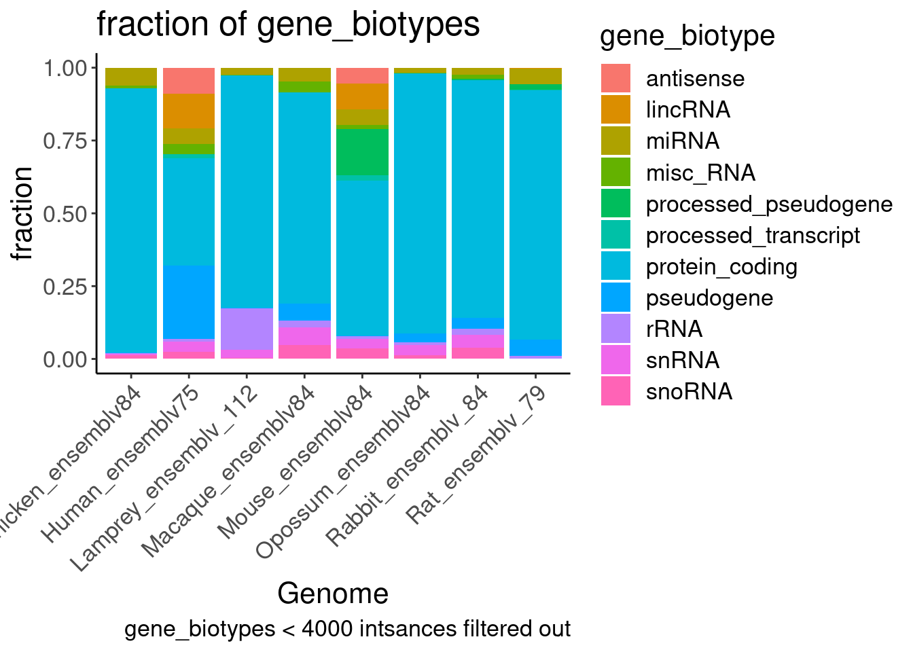
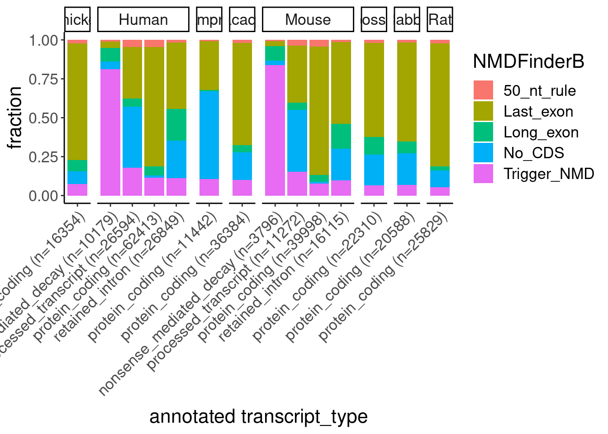

2024-06-24_CheckAnnotationsOfOtherSpecies
2024-06-24
Last updated: 2024-07-09
Checks: 6 1
Knit directory:
2024_comparativesplicing/analysis/
This reproducible R Markdown analysis was created with workflowr (version 1.7.0). The Checks tab describes the reproducibility checks that were applied when the results were created. The Past versions tab lists the development history.
The R Markdown file has unstaged changes. To know which version of
the R Markdown file created these results, you’ll want to first commit
it to the Git repo. If you’re still working on the analysis, you can
ignore this warning. When you’re finished, you can run
wflow_publish to commit the R Markdown file and build the
HTML.
Great job! The global environment was empty. Objects defined in the global environment can affect the analysis in your R Markdown file in unknown ways. For reproduciblity it’s best to always run the code in an empty environment.
The command set.seed(19900924) was run prior to running
the code in the R Markdown file. Setting a seed ensures that any results
that rely on randomness, e.g. subsampling or permutations, are
reproducible.
Great job! Recording the operating system, R version, and package versions is critical for reproducibility.
Nice! There were no cached chunks for this analysis, so you can be confident that you successfully produced the results during this run.
Great job! Using relative paths to the files within your workflowr project makes it easier to run your code on other machines.
Great! You are using Git for version control. Tracking code development and connecting the code version to the results is critical for reproducibility.
The results in this page were generated with repository version 5495e15. See the Past versions tab to see a history of the changes made to the R Markdown and HTML files.
Note that you need to be careful to ensure that all relevant files for
the analysis have been committed to Git prior to generating the results
(you can use wflow_publish or
wflow_git_commit). workflowr only checks the R Markdown
file, but you know if there are other scripts or data files that it
depends on. Below is the status of the Git repository when the results
were generated:
Ignored files:
Ignored: .Rhistory
Ignored: .Rproj.user/
Ignored: analysis/figure/
Ignored: code/.snakemake/
Ignored: code/GenomeFiles/
Ignored: code/SJC_annotations_d5d1043c36aa60f014dee37e6f54418aeac524c63858131c0c68769dba597410.pckle
Ignored: code/Session.vim
Ignored: code/kaessmanAnalysis/
Ignored: code/kaessman_AS_dat/
Ignored: code/logs/
Ignored: code/rules/.GenomeAnnotations.smk.swp
Ignored: code/scratch/
Untracked files:
Untracked: analysis/2024-07-08_CheckLeafcutter2_Classifications.Rmd
Untracked: code/scripts/LeafcutterJuncClassificationsToAS_segments.R
Unstaged changes:
Modified: analysis/2024-06-24_CheckAnnotationsOfOtherSpecies.Rmd
Modified: code/Snakefile
Modified: code/envs/bedparse.yml
Modified: code/rules/GenomeAnnotations.smk
Modified: code/scripts/AS_ExonSegments_to_AS_Junctions.py
Modified: code/scripts/leafcutter2
Note that any generated files, e.g. HTML, png, CSS, etc., are not included in this status report because it is ok for generated content to have uncommitted changes.
These are the previous versions of the repository in which changes were
made to the R Markdown
(analysis/2024-06-24_CheckAnnotationsOfOtherSpecies.Rmd)
and HTML
(docs/2024-06-24_CheckAnnotationsOfOtherSpecies.html)
files. If you’ve configured a remote Git repository (see
?wflow_git_remote), click on the hyperlinks in the table
below to view the files as they were in that past version.
| File | Version | Author | Date | Message |
|---|---|---|---|---|
| Rmd | 5495e15 | Benjmain Fair | 2024-07-08 | updates |
| Rmd | 709c019 | Benjmain Fair | 2024-07-02 | initial commit |
Intro
To have some better sense of how to proceed with poorly annotated genomes, for the purposes of identifying unproductive juncs, first I want to explore a bit the annotations of these other species (human, mouse, rat, macaque, chicken, lamprey, opossum)
library(tidyverse)
library(data.table)
library(knitr)
library(ggseqlogo)
# Set theme
theme_set(
theme_classic() +
theme(text=element_text(size=16, family="Helvetica")))
# I use layer a lot, to rotate long x-axis labels
Rotate_x_labels <- theme(axis.text.x = element_text(angle = 45, vjust = 1, hjust=1))bed12 <- Sys.glob("../code/GenomeFiles/*[0-9]/Reference.bed.gz") %>%
setNames(str_replace(., "../code/GenomeFiles/(.+?)/Reference.bed.gz", "\\1")) %>%
lapply(fread, col.names=c("chrom", "start", "stop", "name", "score", "strand", "thickStart", "thickStop", "color", "NumBlocks", "BlockLengths", "BlockStarts", "gene_id","transcript_id","gene_biotype","gene_name","transcript_biotype","transcript_support_level","tag","transcript_name" )) %>%
bind_rows(.id="Genome")Let’s check Number of annotated protein coding genes in each genome
bed12 %>%
filter(gene_biotype=="protein_coding") %>%
distinct(gene_id, .keep_all=T) %>%
count(Genome) %>%
ggplot(aes(x=Genome, y=n)) +
geom_col() +
Rotate_x_labels +
labs(y='Number', title='Number of protein_coding genes annotated')…So similar numbers (roughly 20,000), between human and opossum. that is believable. Only ~15,000 for chicken… And even less in lamprey. Not sure if that is real biology or annotation quality, both seem plausible explanations. Let’s check the number/fraction of other types of genes.
Fraction of gene_biotypes
bed12 %>%
add_count(gene_biotype) %>%
filter(n>4000) %>%
distinct(gene_id, .keep_all=T) %>%
count(gene_biotype, Genome) %>%
ggplot(aes(x=Genome, y=n, fill=gene_biotype)) +
geom_col(position='fill') +
Rotate_x_labels +
labs(y='fraction', title='fraction of gene_biotypes',
caption='gene_biotypes < 4000 intsances filtered out')
Some mammals don’t have as many lincRNAs annotated… I think this is more likely just a refelection of annotation quality than biology. Let’s now check transcript annotations..
bed12 %>%
# count(transcript_biotype) %>%
# filter(n>4000)
add_count(transcript_biotype) %>%
filter(n>4000) %>%
count(transcript_biotype, Genome) %>%
ggplot(aes(x=Genome, y=n, fill=transcript_biotype)) +
geom_col(position='fill') +
Rotate_x_labels +
labs(y='fraction', title='fraction of transcript_biotypes',
caption='transcript_biotypes < 4000 intsances filtered out')Ok so only human and mouse have lots of the unproductive ‘processed_transcript’ and ‘nonsense_mediated_decay’ transcripts annotated. Defintely just refelction of annotation quality. Our unproductive splicing script might be really useful for these other species.
Let’s also check number of transcripts per protein coding gene…
bed12 %>%
filter(gene_biotype == "protein_coding") %>%
mutate(IsProteinCodingTranscript = transcript_biotype=="protein_coding") %>%
group_by(Genome, gene_id) %>%
mutate(numIsoforms = n()) %>%
mutate(numProteinCodingIsoforms = sum(IsProteinCodingTranscript)) %>%
ungroup() %>%
distinct(Genome, gene_id, .keep_all=T) %>%
dplyr::select(Genome, gene_id, numIsoforms, numProteinCodingIsoforms) %>%
mutate(FractionCodingIsoforms = numProteinCodingIsoforms/numIsoforms) %>%
group_by(Genome, numIsoforms) %>%
summarise(
n = n(),
FractionCodingIsoforms.mean = mean(FractionCodingIsoforms)
) %>%
ungroup() %>%
mutate(NumProductiveIsoforms = FractionCodingIsoforms.mean*n) %>%
mutate(numIsoforms.simplified = case_when(
numIsoforms < 20 ~ as.numeric(numIsoforms),
TRUE ~ as.numeric(20))) %>%
group_by(Genome, numIsoforms.simplified) %>%
summarise(
n.simplified = sum(n),
NumProductiveIsoforms.simplified = sum(NumProductiveIsoforms)) %>%
ungroup() %>%
mutate(NumUnproductive = n.simplified - NumProductiveIsoforms.simplified) %>%
dplyr::select(Genome, numIsoforms.simplified, n.simplified, NumProductive = NumProductiveIsoforms.simplified, NumUnproductive) %>%
pivot_longer(names_to = "transcript_type", values_to = "n", cols=c("NumProductive", "NumUnproductive")) %>%
ggplot(aes(x=factor(numIsoforms.simplified), y=n, fill=transcript_type)) +
geom_col(position='stack') +
scale_x_discrete(labels = c(1:19, ">20")) +
facet_wrap(~Genome, scales="free_y") +
scale_fill_manual(values=c("red", "gray"), labels=c("NumProductive"="Productive", "NumUnproductive"="Unproductive")) +
Rotate_x_labels +
labs(fill="transcript type", y="Num genes", x="Number transcripts per gene",
caption="only protein coding genes considered\ntranscripts with 'protein_coding' are 'Productive'")So only human and mouse have ‘unproductive’ transcripts annotated. And many species only have one isoform annotated for most genes in any case. I suppose one reasonable approach is to just use all ORFs in ‘protein_coding’ transcripts as productive.
Let’s check the additoinal tags (unfortanely, bedparse only considers the first tag instance, so there are undoubtedly some mistakes here, but I think that is still ok…). I’m most interested in the tags related to ‘mRNA_end’, and ‘mRNA_start’ which indicate poor quality transciript boundary definitions.
bed12 %>%
filter(transcript_biotype == "protein_coding") %>%
count(tag, Genome) %>%
ggplot(aes(x=Genome, y=n, fill=tag)) +
geom_col(position='fill') +
Rotate_x_labels +
labs(y='fraction', title='fraction of transcript tags')Ok, but from IGV, looking at say chicken or lamprey, the CDS annotations are clearly not accurate (often starting at the first base of the transcript)… So I will definitely need to try to manually identify the ORF for Yang’s script to reasonably work. So based on a little intuition, I think the approach for getting Yang’s script to work with all of these species, will be to manually reannotated ORFs (based on longest ORF), and not requiring an ATG start (since I think often the true start is cut off from the transcript).
Next let’s look at intron sizes and motifs…
note that I see there is a bug about the lamprey splice sites file (actually all of them, because gtftools by default only processes chromosomes named 1-22,X,Y)… will fix later.
Introns <- Sys.glob("../code/GenomeFiles/*[0-9]/SpliceSites.seq.bed.gz") %>%
setNames(str_replace(., "../code/GenomeFiles/(.+?)/SpliceSites.seq.bed.gz", "\\1")) %>%
lapply(fread, col.names=c("chrom", "start", "stop", "name", "score", "strand", "DonorSeq","AcceptorSeq" )) %>%
bind_rows(.id="Genome")
Introns <- Introns %>%
separate(name, into=c("transcript", "intron"), sep="_")
Introns %>%
mutate(len = stop - start) %>%
ggplot(aes(x=len, color=Genome)) +
stat_ecdf() +
scale_x_continuous(trans='log10') +
coord_cartesian(xlim=c(100, 1E5)) +
labs(y='ecdf', x='IntLength (bp)')Ok, chicken and lamprey have slightly shorter introns than the mammals… Still much longer than yeast/plant introns which are usually than 50-200 bp.
Let’s check number of introns per protein coding gene transcript.
bed12 %>%
filter(gene_biotype=="protein_coding") %>%
distinct(gene_id, .keep_all=T) %>%
dplyr::select(Genome, transcript_id) %>%
inner_join(Introns, by=c("Genome", "transcript_id"="transcript")) %>%
count(transcript_id, Genome) %>%
ggplot(aes(x=n, color=Genome)) +
stat_ecdf() +
coord_cartesian(xlim=c(0, 20)) +
labs(y='ecdf', x='Num introns', title='num introns per gene')All these species have median ~8 introns per gene.
Let’s look at splice site motifs:
SpliceSites <- Introns %>%
# head(1000) %>%
dplyr::rename(Donor.Seq=DonorSeq, Acceptor.Seq=AcceptorSeq) %>%
mutate(Donor.Pos = case_when(
strand == "+" ~ paste(chrom, start),
strand == "-" ~ paste(chrom, stop)
)) %>%
mutate(Acceptor.Pos = case_when(
strand == "+" ~ paste(chrom, stop),
strand == "-" ~ paste(chrom, start)
)) %>%
dplyr::select(Genome, transcript, intron, Donor.Pos, Acceptor.Pos, Donor.Seq, Acceptor.Seq) %>%
pivot_longer(cols=c("Donor.Seq", "Acceptor.Seq", "Donor.Pos", "Acceptor.Pos"),names_to=c("AcceptorOrDonor", ".value"), names_pattern="(^.+?)\\.(.+$)")
SpliceSites %>%
# filter for introns in protein coding genes
inner_join(
bed12 %>%
filter(gene_biotype=="protein_coding") %>%
distinct(transcript_id, .keep_all=T) %>%
dplyr::select(Genome, transcript=transcript_id)
) %>%
distinct(Genome, Pos, AcceptorOrDonor, .keep_all=T) %>%
count(AcceptorOrDonor, Genome) %>%
ggplot(aes(x=Genome, y=n, fill=AcceptorOrDonor)) +
geom_col(position='dodge') +
Rotate_x_labels +
labs(y='Number of unique splice sites annotated', caption='only protein cooding genes')I think this roughly matches the number of protein coding genes annotated, and is somewhat reasonable… Perhaps both some biology and difference in annotation effects here. Now let’s look at splice site motifs
PullSeq <- function(df){
df %>%
pull(Seq) %>%
return()
}
set.seed(0)
SpliceSites %>%
# filter for introns in protein coding genes
inner_join(
bed12 %>%
filter(gene_biotype=="protein_coding") %>%
distinct(transcript_id, .keep_all=T) %>%
dplyr::select(Genome, transcript=transcript_id)
) %>%
distinct(Genome, Pos, AcceptorOrDonor, .keep_all=T) %>%
group_by(Genome, AcceptorOrDonor) %>%
sample_n(5000) %>%
mutate(Motif = paste(Genome, AcceptorOrDonor)) %>%
split(as.factor(.$Motif)) %>%
lapply(PullSeq) %>%
ggseqlogo()I think ggseqlogo is thinking these are amino acid sequences because there are lots of sequences with ’N’s.
Let’s count how many of them have N’s, and then consider filtering them out…
SpliceSites %>%
# filter for introns in protein coding genes
inner_join(
bed12 %>%
filter(gene_biotype=="protein_coding") %>%
distinct(transcript_id, .keep_all=T) %>%
dplyr::select(Genome, transcript=transcript_id)
) %>%
distinct(Genome, Pos, AcceptorOrDonor, .keep_all=T) %>%
mutate(ContainsN = str_detect(Seq, 'N')) %>%
count(AcceptorOrDonor, Genome, ContainsN) %>%
ggplot(aes(x=Genome, y=n, fill=ContainsN)) +
geom_col(position='fill') +
Rotate_x_labels +
coord_cartesian(ylim=c(0, 0.01)) +
facet_wrap(~AcceptorOrDonor) +
labs(y='fraction splice sites containing "N"', caption='only protein cooding genes')So, something like 0-0.05% of splice sites contain “N” in the sequence. pretty negligble. Surprisingly, lamprey doesn’t have many of these. Let’s just filter them out and remake the plot, so that ggseqlogo colors the letters better.
set.seed(0)
SpliceSites %>%
# filter for introns in protein coding genes
inner_join(
bed12 %>%
filter(gene_biotype=="protein_coding") %>%
distinct(transcript_id, .keep_all=T) %>%
dplyr::select(Genome, transcript=transcript_id)
) %>%
distinct(Genome, Pos, AcceptorOrDonor, .keep_all=T) %>%
filter(!str_detect(Seq, "N")) %>%
group_by(Genome, AcceptorOrDonor) %>%
sample_n(5000) %>%
mutate(Motif = paste(Genome, AcceptorOrDonor)) %>%
split(as.factor(.$Motif)) %>%
lapply(PullSeq) %>%
ggseqlogo()Maybe lamprey has a weaker necessity for polypyrimidine tract, but other than that, all these seqlogos look more or less same to me.
Now let’s better understand why, when browsing IGV, some of these transcripts have coding segments that start at the annotated transcript start. Obviously I think this is just poor annotation, but I want to know exactly how prevalent it is, and if these transcripts are tagged or have other definiing features I should know about. Note that in these bed12, the coding region is marked by the thick regions in the bed file.
First let’s look at the coding span (thickStop - thickStart)
bed12 %>%
filter(transcript_biotype=="protein_coding") %>%
mutate(codingSpanLen = thickStop - thickStart) %>%
# mutate(codingStart)
ggplot(aes(x=codingSpanLen, color=Genome)) +
stat_ecdf() +
coord_cartesian(xlim=c(0, 10000)) +
labs(y='ecdf', x='CodingSpanLen (bp)')UTR.Lens.P <- bed12 %>%
filter(transcript_biotype=="protein_coding") %>%
mutate(ThreePrimeUTR = case_when(
strand == "+" ~ stop - thickStop,
strand == "-" ~ thickStart - start
)) %>%
mutate(FivePrimeUTR = case_when(
strand == "+" ~ thickStart - start,
strand == "-" ~stop - thickStop
)) %>%
dplyr::select(Genome, ThreePrimeUTR, FivePrimeUTR, transcript_id) %>%
pivot_longer(names_to = "UTRType", values_to="Length", cols = c("ThreePrimeUTR", "FivePrimeUTR")) %>%
ggplot(aes(x=Length, color=Genome)) +
stat_ecdf() +
facet_wrap(~UTRType) +
coord_cartesian(xlim=c(0, 5000)) +
labs(y='ecdf', x='UTR length (bp)', caption="length includes introns")
UTR.Lens.PUTR.Lens.P +
scale_x_continuous(trans='log1p')Ok so human and mouse have the best annotated UTRs, while lamprey is clearly the worst… Especially the 5’ UTRs… I think often the start codon will be missing from the transcript. I think the best thing to do will actually just be to use start and stop codons when the UTRs are present, and other wise look for the longest ORF within the transcript, not requiring a STOP to be present if the 3’UTR is len==0, and not requiring a START to be present if the 5’UTR len==0. That way, we can identify the correct frame, whilst not cutting the ORF short of the transcript boundaries.
Let’s look at the tags in the gtf, to get a sense of if these might be tagged in some special way…
bed12 %>%
count(Genome, tag) Genome tag n
1: Chicken_ensemblv84 . 17954
2: Human_ensemblv75 . 142812
3: Human_ensemblv75 CCDS 37104
4: Human_ensemblv75 mRNA_end_NF 20783
5: Human_ensemblv75 mRNA_start_NF 14413
6: Human_ensemblv75 seleno 58
7: Lamprey_ensemblv_112 . 1027
8: Lamprey_ensemblv_112 Ensembl_canonical 13114
9: Macaque_ensemblv84 . 44725
10: Mouse_ensemblv84 . 33759
11: Mouse_ensemblv84 CCDS 174
12: Mouse_ensemblv84 basic 67132
13: Mouse_ensemblv84 cds_end_NF 6
14: Mouse_ensemblv84 cds_start_NF 8
15: Mouse_ensemblv84 mRNA_end_NF 8429
16: Mouse_ensemblv84 mRNA_start_NF 5712
17: Opossum_ensemblv84 . 24882
18: Rabbit_ensemblv_84 . 24964
19: Rat_ensemblv_79 . 30113
20: Rat_ensemblv_79 mRNA_end_NF 137
21: Rat_ensemblv_79 mRNA_start_NF 153
22: Rat_ensemblv_79 seleno 1
Genome tag nWell the only tag I see in Lamprey is “Ensembl_canonical”, so these are largely not tagged with any special identifier.
…I have reannotated the gtf to comply with Yang’s script (meaning start_codon and stop_codon features must be present, and also used the longest ORF when no CDS for a transcript is found or when only one UTR is present) and also to determine NMDFinderB classifications for each transcript. Let’s explore these transcripts.
bed12.reannotated <- Sys.glob("../code/GenomeFiles/*[0-9]/Reannotated.A.bed.gz") %>%
setNames(str_replace(., "../code/GenomeFiles/(.+?)/Reannotated.A.bed.gz", "\\1")) %>%
lapply(fread, col.names=c("chrom", "start", "stop", "name", "score", "strand", "thickStart", "thickStop", "color", "NumBlocks", "BlockLengths", "BlockStarts", "gene_id", "transcript_id", "gene_biotype", "gene_type", "transcript_biotype", "transcript_type", "transcript_support_level","tag","ccds_id", "NMDFinderB", "CDSLen" )) %>%
bind_rows(.id="Genome")First let’s check how NMDFinder classification coressponds with transcript_type
bed12.reannotated %>%
count(Genome, tag) Genome tag n
1: Chicken_ensemblv84 . 17954
2: Human_ensemblv75 . 142812
3: Human_ensemblv75 CCDS 37104
4: Human_ensemblv75 mRNA_end_NF 20783
5: Human_ensemblv75 mRNA_start_NF 14413
6: Human_ensemblv75 seleno 58
7: Lamprey_ensemblv_112 . 1027
8: Lamprey_ensemblv_112 Ensembl_canonical 13114
9: Macaque_ensemblv84 . 44725
10: Mouse_ensemblv84 . 33759
11: Mouse_ensemblv84 CCDS 174
12: Mouse_ensemblv84 basic 67132
13: Mouse_ensemblv84 cds_end_NF 6
14: Mouse_ensemblv84 cds_start_NF 8
15: Mouse_ensemblv84 mRNA_end_NF 8429
16: Mouse_ensemblv84 mRNA_start_NF 5712
17: Opossum_ensemblv84 . 24882
18: Rabbit_ensemblv_84 . 24964
19: Rat_ensemblv_79 . 30113
20: Rat_ensemblv_79 mRNA_end_NF 137
21: Rat_ensemblv_79 mRNA_start_NF 153
22: Rat_ensemblv_79 seleno 1
Genome tag nbed12.reannotated %>%
filter(str_detect(Genome, "Human")) %>%
filter(gene_type == "protein_coding") %>%
filter(!str_detect(tag, "_NF")) %>%
add_count(transcript_type) %>%
mutate(transcript_type = str_glue("{transcript_type} (n={n})")) %>%
dplyr::select(-n) %>%
count(transcript_type, NMDFinderB) %>%
ggplot(aes(x=transcript_type, y=n, fill=NMDFinderB)) +
geom_col(position='fill') +
Rotate_x_labels +
labs(y="fraction", x="annotated transcript_type", caption="'processed_transcript' contains no annotated ORF\nin which case NMD status based on longest ORF", title='human')bed12.reannotated %>%
filter(str_detect(Genome, "Mouse")) %>%
filter(gene_type == "protein_coding") %>%
filter(!str_detect(tag, "_NF")) %>%
add_count(transcript_type) %>%
filter(n>1000) %>%
mutate(transcript_type = str_glue("{transcript_type} (n={n})")) %>%
dplyr::select(-n) %>%
count(transcript_type, NMDFinderB) %>%
ggplot(aes(x=transcript_type, y=n, fill=NMDFinderB)) +
geom_col(position='fill') +
Rotate_x_labels +
labs(y="fraction", x="annotated transcript_type", caption="'processed_transcript' contains no annotated ORF\nin which case NMD status based on longest ORF", title='mouse')bed12.reannotated %>%
filter(gene_type == "protein_coding") %>%
filter(!str_detect(tag, "_NF")) %>%
mutate(Genome = str_replace(Genome, "^(.+?)_ensembl.+$", "\\1")) %>%
add_count(Genome, transcript_type) %>%
filter(n>1000) %>%
mutate(transcript_type = str_glue("{transcript_type} (n={n})")) %>%
dplyr::select(-n) %>%
count(Genome, transcript_type, NMDFinderB) %>%
ggplot(aes(x=transcript_type, y=n, fill=NMDFinderB)) +
geom_col(position='fill') +
Rotate_x_labels +
labs(y="fraction", x="annotated transcript_type") +
facet_grid(~Genome, scales="free_x", space='free', labeller = label_wrap_gen(10))Ok one thing that surprises me is that the ‘processed_transript’ actually is not overwhelmingly ‘Trigger NMD’ the way that ‘nonsense_mediated_decay’ is… But from eQTL effect correlations, and from naRNA/steadyStateRNA, I think these transcripts (or rather, transcripts containing the splice junctions unique to these transcripts) are in fact generally unstable. Maybe this is actually an artifact of how I determined NMDFinder: when a transcript does not have an ORF, I identified the longest ORF without requiring an ATG or STOP codon, then use that “ORF” for the NMDFinderB decision tree. My reasoning for this was to reasonably identify the correct reading frame for transcripts in species in which the transcripts are poorly annotated such that the ATG (and 5’UTR) might be missing just because of incompleteness. I think this might often identify correct frame of the protein_coding ORF, even if the transcript doesn’t actually contain an ATG to use that frame.
From manual inspection, I think it might be the case that these ‘incomplete’ transcripts are often annotated from ATG to TAA, even if there is no UTR on either side… In any case, this should not affect how things are processed through Yang’s script, since I am still correctly identifying the ORF in those species.
Just to make sure of my understanding of the ‘processed_transcript’ transcript_type, let’s make the same plots but just using the annotated CDS instead of manually searching for the ORFs…
bed12.reannotated.usingOriginalAnnotations <- Sys.glob("../code/GenomeFiles/*[0-9]/Reannotated.B.bed.gz") %>%
setNames(str_replace(., "../code/GenomeFiles/(.+?)/Reannotated.B.bed.gz", "\\1")) %>%
lapply(fread, col.names=c("chrom", "start", "stop", "name", "score", "strand", "thickStart", "thickStop", "color", "NumBlocks", "BlockLengths", "BlockStarts", "gene_id", "transcript_id", "gene_biotype", "gene_type", "transcript_biotype", "transcript_type", "transcript_support_level","tag","ccds_id", "NMDFinderB", "CDSLen" )) %>%
bind_rows(.id="Genome")
bed12.reannotated.usingOriginalAnnotations %>%
filter(gene_type == "protein_coding") %>%
filter(!str_detect(tag, "_NF")) %>%
mutate(Genome = str_replace(Genome, "^(.+?)_ensembl.+$", "\\1")) %>%
add_count(Genome, transcript_type) %>%
filter(n>1000) %>%
mutate(transcript_type = str_glue("{transcript_type} (n={n})")) %>%
dplyr::select(-n) %>%
count(Genome, transcript_type, NMDFinderB) %>%
ggplot(aes(x=transcript_type, y=n, fill=NMDFinderB)) +
geom_col(position='fill') +
Rotate_x_labels +
labs(y="fraction", x="annotated transcript_type") +
facet_grid(~Genome, scales="free_x", space='free', labeller = label_wrap_gen(10))Ok so one thing this obviously confirms is that processed_transcript never contains an annotated CDS, yet I’m sure many of these (even by chance) would contain an ATG and by extension some kind of ORF, albeit probably a short one often. I wonder if there is a hard cutoff for what length ORF the annotators consider a valid CDS worth annotating. Let’s check the length distribution of annotated CDSs.
P <- bed12.reannotated.usingOriginalAnnotations %>%
filter(gene_type == "protein_coding") %>%
filter(!str_detect(tag, "_NF")) %>%
add_count(Genome, transcript_type) %>%
filter(n>1000) %>%
ggplot(aes(x=CDSLen, color=Genome)) +
stat_ecdf() +
facet_wrap(~transcript_type) +
coord_cartesian(xlim=c(0, 1000)) +
labs(x="CDS length (bp)", y="ecdf")
P# zoomed in more
P +
coord_cartesian(xlim=c(0,150), ylim=c(0,.25)) As far as I can tell, there’s not an obvious hard cutoff. perhaps they
also consider conservation or something, cause some legitmate functional
ORFs might be short. But I do notice that there seems to be a sholder at
about ~120bp (40 codons) for nonsense_mediated_decay transcripts. So
maybe a reasonable thing to do is to attempt translating the
processed_transcripts and see that there are ORFs, but they tend to be
shorter than that, otherwise the annotators would more likely call them
nonsense_mediated_decay
As far as I can tell, there’s not an obvious hard cutoff. perhaps they
also consider conservation or something, cause some legitmate functional
ORFs might be short. But I do notice that there seems to be a sholder at
about ~120bp (40 codons) for nonsense_mediated_decay transcripts. So
maybe a reasonable thing to do is to attempt translating the
processed_transcripts and see that there are ORFs, but they tend to be
shorter than that, otherwise the annotators would more likely call them
nonsense_mediated_decay
So let’s replot using that strategy (translate from first ATG, but require ORF to be > 30 codons), and then see how NMDFinderB classifies these ’processed_transcript’s.
bed12.reannotated.ApproachC <- Sys.glob("../code/GenomeFiles/*[0-9]/Reannotated.C.bed.gz") %>%
setNames(str_replace(., "../code/GenomeFiles/(.+?)/Reannotated.C.bed.gz", "\\1")) %>%
lapply(fread, col.names=c("chrom", "start", "stop", "name", "score", "strand", "thickStart", "thickStop", "color", "NumBlocks", "BlockLengths", "BlockStarts", "gene_id", "transcript_id", "gene_biotype", "gene_type", "transcript_biotype", "transcript_type", "transcript_support_level","tag","ccds_id", "NMDFinderB", "CDSLen" )) %>%
bind_rows(.id="Genome")
bed12.reannotated.ApproachC %>%
filter(gene_type == "protein_coding") %>%
filter(!str_detect(tag, "_NF")) %>%
mutate(Genome = str_replace(Genome, "^(.+?)_ensembl.+$", "\\1")) %>%
add_count(Genome, transcript_type) %>%
filter(n>1000) %>%
mutate(transcript_type = str_glue("{transcript_type} (n={n})")) %>%
dplyr::select(-n) %>%
count(Genome, transcript_type, NMDFinderB) %>%
ggplot(aes(x=transcript_type, y=n, fill=NMDFinderB)) +
geom_col(position='fill') +
Rotate_x_labels +
labs(y="fraction", x="annotated transcript_type") +
facet_grid(~Genome, scales="free_x", space='free', labeller = label_wrap_gen(10))bed12.reannotated.ApproachC %>%
filter(gene_type == "protein_coding") %>%
filter(!str_detect(tag, "_NF")) %>%
add_count(Genome, transcript_type) %>%
filter(n>1000) %>%
ggplot(aes(x=CDSLen, color=Genome)) +
stat_ecdf() +
facet_wrap(~transcript_type) +
coord_cartesian(xlim=c(0, 300)) +
labs(x="CDS length (bp)", y="ecdf")Same plots but using approach of translating from first start_codon if no annotated CDS, with no minimum length requirement.
bed12.reannotated.ApproachD <- Sys.glob("../code/GenomeFiles/*[0-9]/Reannotated.D.bed.gz") %>%
setNames(str_replace(., "../code/GenomeFiles/(.+?)/Reannotated.D.bed.gz", "\\1")) %>%
lapply(fread, col.names=c("chrom", "start", "stop", "name", "score", "strand", "thickStart", "thickStop", "color", "NumBlocks", "BlockLengths", "BlockStarts", "gene_id", "transcript_id", "gene_biotype", "gene_type", "transcript_biotype", "transcript_type", "transcript_support_level","tag","ccds_id", "NMDFinderB", "CDSLen" )) %>%
bind_rows(.id="Genome")
bed12.reannotated.ApproachD %>%
filter(gene_type == "protein_coding") %>%
filter(!str_detect(tag, "_NF")) %>%
mutate(Genome = str_replace(Genome, "^(.+?)_ensembl.+$", "\\1")) %>%
add_count(Genome, transcript_type) %>%
filter(n>1000) %>%
mutate(transcript_type = str_glue("{transcript_type} (n={n})")) %>%
dplyr::select(-n) %>%
count(Genome, transcript_type, NMDFinderB) %>%
ggplot(aes(x=transcript_type, y=n, fill=NMDFinderB)) +
geom_col(position='fill') +
Rotate_x_labels +
labs(y="fraction", x="annotated transcript_type") +
facet_grid(~Genome, scales="free_x", space='free', labeller = label_wrap_gen(10))bed12.reannotated.ApproachD %>%
filter(gene_type == "protein_coding") %>%
filter(!str_detect(tag, "_NF")) %>%
add_count(Genome, transcript_type) %>%
filter(n>1000) %>%
ggplot(aes(x=CDSLen, color=Genome)) +
stat_ecdf() +
facet_wrap(~transcript_type) +
coord_cartesian(xlim=c(0, 300)) +
labs(x="CDS length (bp)", y="ecdf")Ok, right. so i think i get the point. processed_transcript just means short ORF.
I also have another approach to identifying ORF, which is to ignore annotations completely, and just translate from first ATG with an ORF > 42… Let’s check what that does…
bed12.reannotated.ApproachE <- Sys.glob("../code/GenomeFiles/*[0-9]/Reannotated.E.bed.gz") %>%
setNames(str_replace(., "../code/GenomeFiles/(.+?)/Reannotated.E.bed.gz", "\\1")) %>%
lapply(fread, col.names=c("chrom", "start", "stop", "name", "score", "strand", "thickStart", "thickStop", "color", "NumBlocks", "BlockLengths", "BlockStarts", "gene_id", "transcript_id", "gene_biotype", "gene_type", "transcript_biotype", "transcript_type", "transcript_support_level","tag","ccds_id", "NMDFinderB", "CDSLen" )) %>%
bind_rows(.id="Genome")
bed12.reannotated.ApproachE %>%
filter(gene_type == "protein_coding") %>%
filter(!str_detect(tag, "_NF")) %>%
mutate(Genome = str_replace(Genome, "^(.+?)_ensembl.+$", "\\1")) %>%
add_count(Genome, transcript_type) %>%
filter(n>1000) %>%
mutate(transcript_type = str_glue("{transcript_type} (n={n})")) %>%
dplyr::select(-n) %>%
count(Genome, transcript_type, NMDFinderB) %>%
ggplot(aes(x=transcript_type, y=n, fill=NMDFinderB)) +
geom_col(position='fill') +
Rotate_x_labels +
labs(y="fraction", x="annotated transcript_type") +
facet_grid(~Genome, scales="free_x", space='free', labeller = label_wrap_gen(10))
bed12.reannotated.ApproachE %>%
filter(gene_type == "protein_coding") %>%
filter(!str_detect(tag, "_NF")) %>%
add_count(Genome, transcript_type) %>%
filter(n>1000) %>%
ggplot(aes(x=CDSLen, color=Genome)) +
stat_ecdf() +
facet_wrap(~transcript_type) +
coord_cartesian(xlim=c(0, 300)) +
labs(x="CDS length (bp)", y="ecdf")Ok, there’s enough times that this approach doesn’t find any CDS or finds the wrong CDS for annotated transcripts, that I think when there is any annotated start codon, I should use that.
Anyway, let’s move on to thinking about how to take these gtf files (now properly formatted with start_codon and stop_codon lines for Yang’s script) and making sense of the alternative coding regions listed in Mazin, in terms of productive/unproductive splicing.
Approach for going from alternative coding regions (Mazin appraoch for communicating AS events), to alternative splice junctions
could start with all protein_coding tagged transcripts that span the cassette exon, then create juncs with and without. (Won’t handle mutually exclusive exons properly, but i think that is ok)
similar for alt donors, but start with protein_coding transcripts that contain one of the splice donors
same for alt acceptors
probably will want some additional filters for the ‘weird’ hard to interpret cases… Like when the Mazin cassette exon only partially overlaps an annotated exon. Or when there are consecutive Mazin AS exons.
Here is a pseudocode approach to accomplishing this:
- bedtools intersect to remove Mazin AS segments only partially overlapping annotated exons.
- bedtools intersect protein coding transcripts with cassette exons, then read into python and with bedparse…
- get junctions uniquely made from including/excluding the exon.
Note that Yang’s script requires gene_name and transcript_name in the gtf attributes. Not all ensembl transcripts have these, even when there is a gene_id… see below…
bed12.reannotated.ApproachE %>%
filter(gene_type == "protein_coding") %>%
filter(!str_detect(tag, "_NF")) %>%
mutate(IsGeneNameEmpty = gene_id == ".") %>%
distinct(gene_id, Genome, .keep_all=T) %>%
count(Genome, IsGeneNameEmpty) %>%
ggplot(aes(x=Genome, y=n, fill=IsGeneNameEmpty)) +
geom_col(position='fill') +
scale_fill_manual(values = c("red", "black"), labels=c("TRUE"="No gene_name attribute", "FALSE"="Has gene_name"), name=NULL) +
Rotate_x_labels +
labs(y="Fraction of genes")
bed12.reannotated.ApproachE %>%
filter(gene_type == "protein_coding") %>%
filter(!str_detect(tag, "_NF")) %>%
mutate(IsGeneNameEmpty = transcript_name == ".") %>%
distinct(transcript_id, Genome, .keep_all=T) %>%
count(Genome, IsGeneNameEmpty) %>%
ggplot(aes(x=Genome, y=n, fill=IsGeneNameEmpty)) +
geom_col(position='fill') +
scale_fill_manual(values = c("red", "black"), labels=c("TRUE"="No transcript_name attribute", "FALSE"="Has transcript_name"), name=NULL) +
Rotate_x_labels +
labs(y="Fraction of transcripts")Therefore, when creating gtf for Yang’s script, just use gene_id and transcript_id as gene_name and transcript_name
sessionInfo()R version 4.2.0 (2022-04-22)
Platform: x86_64-pc-linux-gnu (64-bit)
Running under: CentOS Linux 7 (Core)
Matrix products: default
BLAS/LAPACK: /software/openblas-0.3.13-el7-x86_64/lib/libopenblas_haswellp-r0.3.13.so
locale:
[1] LC_CTYPE=en_US.UTF-8 LC_NUMERIC=C LC_TIME=C
[4] LC_COLLATE=C LC_MONETARY=C LC_MESSAGES=C
[7] LC_PAPER=C LC_NAME=C LC_ADDRESS=C
[10] LC_TELEPHONE=C LC_MEASUREMENT=C LC_IDENTIFICATION=C
attached base packages:
[1] stats graphics grDevices utils datasets methods base
other attached packages:
[1] ggseqlogo_0.1 knitr_1.39 data.table_1.14.2 forcats_0.5.1
[5] stringr_1.4.0 dplyr_1.0.9 purrr_0.3.4 readr_2.1.2
[9] tidyr_1.2.0 tibble_3.1.7 ggplot2_3.3.6 tidyverse_1.3.1
loaded via a namespace (and not attached):
[1] Rcpp_1.0.12 lubridate_1.8.0 assertthat_0.2.1 rprojroot_2.0.3
[5] digest_0.6.29 utf8_1.2.2 R6_2.5.1 cellranger_1.1.0
[9] backports_1.4.1 reprex_2.0.1 evaluate_0.15 highr_0.9
[13] httr_1.4.3 pillar_1.7.0 rlang_1.0.2 readxl_1.4.0
[17] rstudioapi_0.13 whisker_0.4 jquerylib_0.1.4 R.oo_1.24.0
[21] R.utils_2.11.0 rmarkdown_2.14 labeling_0.4.2 munsell_0.5.0
[25] broom_0.8.0 compiler_4.2.0 httpuv_1.6.5 modelr_0.1.8
[29] xfun_0.30 pkgconfig_2.0.3 htmltools_0.5.2 tidyselect_1.1.2
[33] workflowr_1.7.0 fansi_1.0.3 crayon_1.5.1 tzdb_0.3.0
[37] dbplyr_2.1.1 withr_2.5.0 later_1.3.0 R.methodsS3_1.8.1
[41] grid_4.2.0 jsonlite_1.8.0 gtable_0.3.0 lifecycle_1.0.1
[45] DBI_1.1.2 git2r_0.30.1 magrittr_2.0.3 scales_1.3.0
[49] cli_3.6.2 stringi_1.7.6 farver_2.1.0 fs_1.5.2
[53] promises_1.2.0.1 xml2_1.3.3 bslib_0.3.1 ellipsis_0.3.2
[57] generics_0.1.2 vctrs_0.4.1 tools_4.2.0 glue_1.6.2
[61] hms_1.1.1 fastmap_1.1.0 yaml_2.3.5 colorspace_2.0-3
[65] rvest_1.0.2 haven_2.5.0 sass_0.4.1